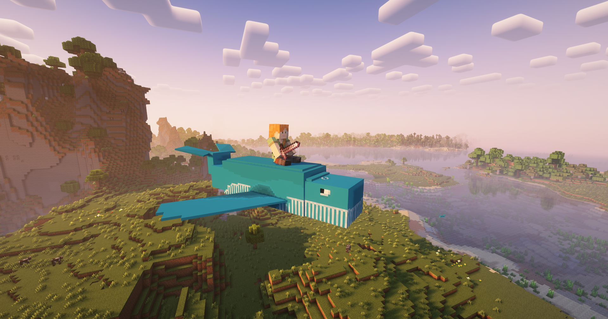

The Norhval is a flying whale that roams the overworld. He was added in v0.1.
You can feed him raw cod and tame him. After taming the whale, you can ride it and explore the skies.
The Norhval has 15 hearts of health and gives 30 experience points after dying.
Additional drops include Whale Teeth and Antigravity Shards.
It cannot be leashed and dismounts the player when entering the water.
To move around, use your usual movement keybinds.
However, to float down with the whale, press "J". This keybind can be changed in the settings.
The Norhval can "sit down" after it has been tamed.
This is shown by the fact that its tail points upwards.
This does not make the Norhval stand still, but actually prevents it from teleporting after its owner.

Since version 0.2, the Norhval has its own sounds. Before that, dolphin sounds were used.
v0.1: Added the Norhval
v0.2: New texture, new sounds, new animations